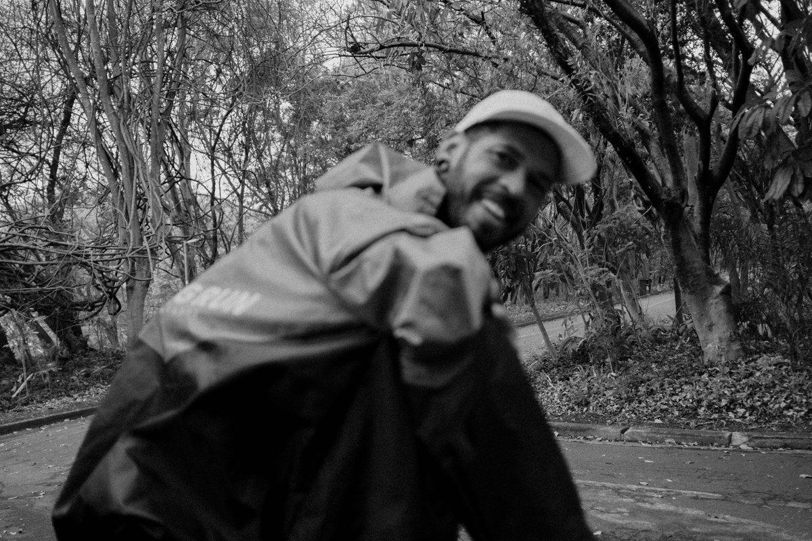
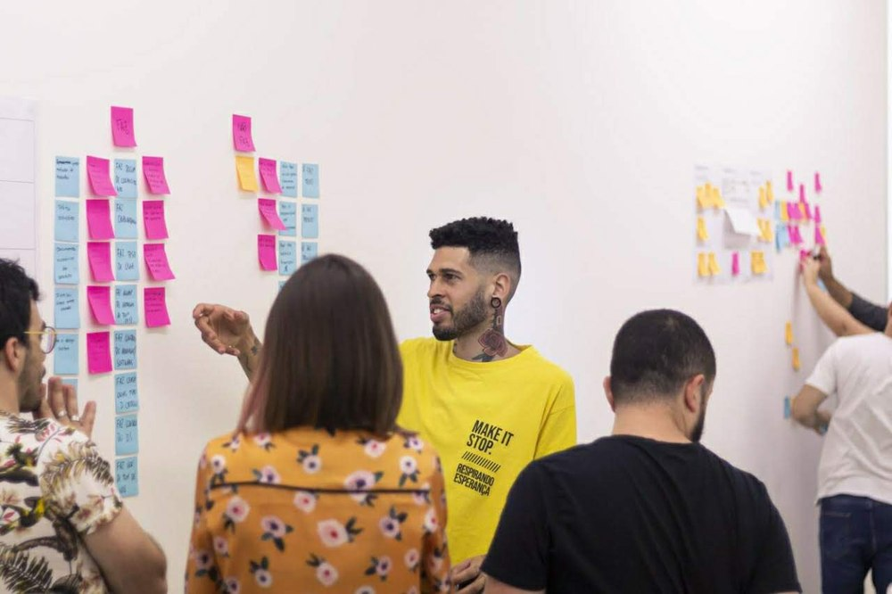
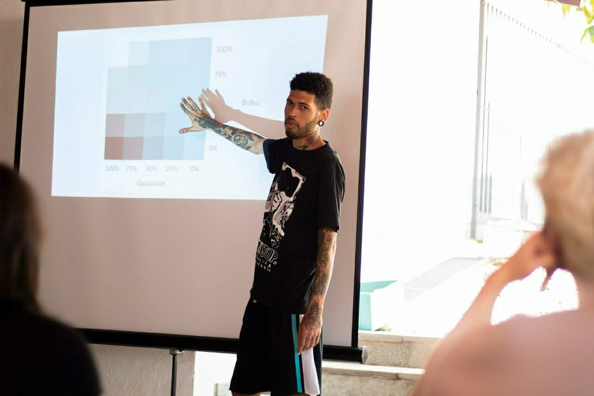
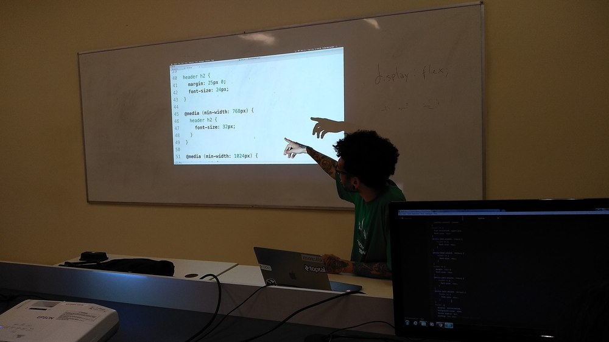
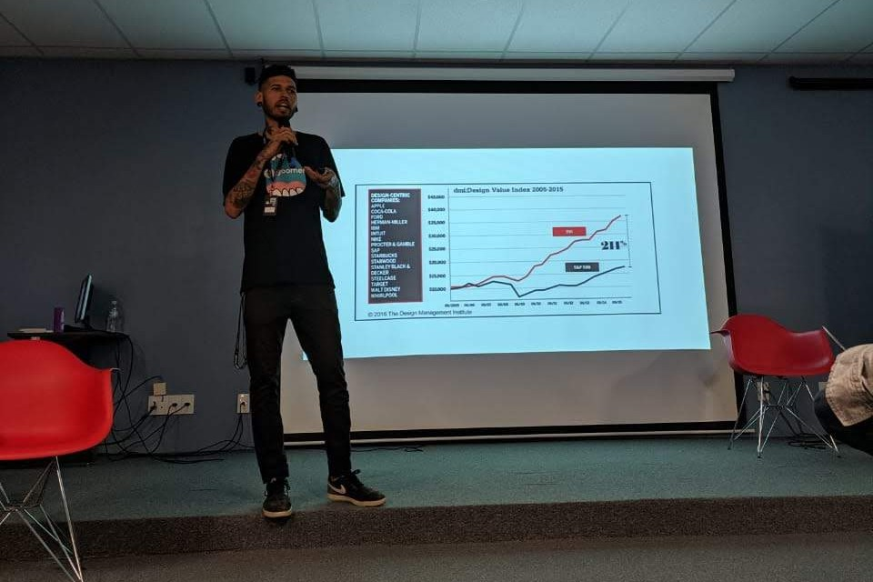
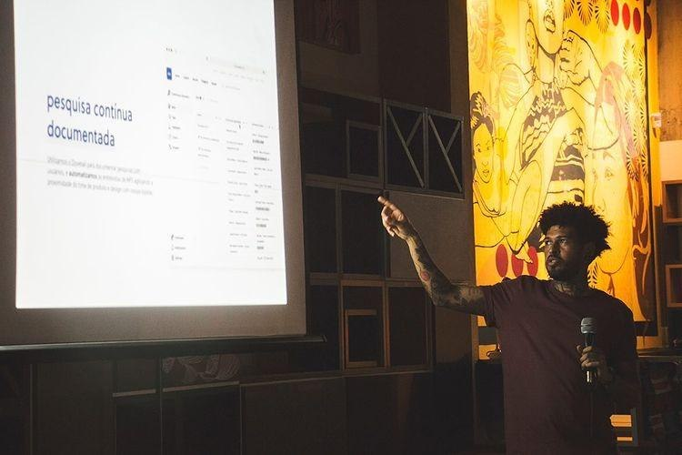
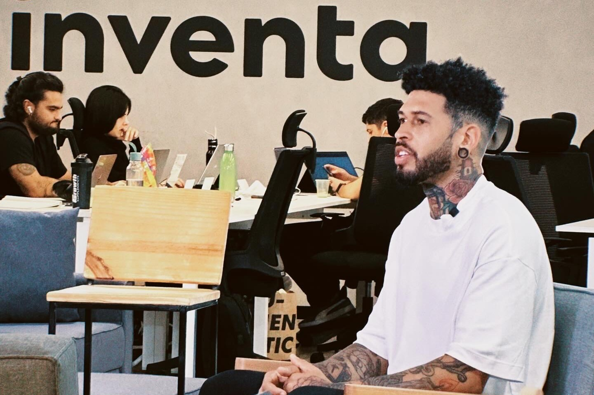

Felipe Oliveira, Product Designer sênior em São Paulo

Desenho produtos para serem construídos.
Sou product designer sênior em São Paulo. Fui o primeiro designer da Tivita, trabalhei nos design systems da XP Investimentos e da Stone e, antes do design, programei front-end. Por isso penso cada decisão de interface junto com quem vai construí-la.
Onde trabalhei
Tivita Inventa Olist Stone XP Investimentos, pela Meiuca Goomer
Sobre
Comecei em tecnologia em 2010, no suporte técnico de uma fábrica de software em Sorocaba. Passei por social media, design e desenvolvimento front-end (saudades, jQuery) antes de chegar a Product Design. Essa bagagem define como eu trabalho: penso a interface, o sistema por trás dela e como ela vai ser construída.
Design system virou território natural. Quem já escreveu CSS sabe que componentes bem organizados e decisões claras são o que deixam um produto crescer sem virar uma colcha de retalhos.
Fora das telas, conduzo dinâmicas com times, dou aulas e palestro sobre design.






Trajetória
-
Tivita
Jun 2024 – Set 2026
Fintech de saúde. Primeiro designer contratado. Desenhei as primeiras funcionalidades de ponta a ponta e criei a base do design system. Depois, assumi o módulo de automação de guias médicas, do atendimento ao fechamento de lotes, prototipando em código com o Claude Code.
-
Inventa
Jul 2023 – Jun 2024
Marketplace B2B para o varejo. Desenhei o marketplace e ferramentas internas de gestão de clientes, da pesquisa presencial com vendedores até a interface final.
Ver case em PDF (abre em nova aba) -
Olist
Ago 2021 – Jul 2023
E-commerce. Desenhei o app do lojista, com notificações e ajustes rápidos de preço e estoque. Depois, a integração com a Tiny, unificando cadastro e escolha de planos entre os dois produtos.
Ver case em PDF (abre em nova aba) -
Stone
Dez 2020 – Ago 2021
Fintech. Trabalhei no design system e nas primeiras versões da conta digital, na web e no app, onde lojistas gerenciavam cartões, Pix, seguros e empréstimos.
-
Meiuca
Out 2019 – Jun 2020
Consultoria de design. Meu projeto principal foi o design system da XP Investimentos: seis meses mapeando inconsistências entre produtos e construindo os fundamentos visuais e os primeiros componentes para toda a companhia.
-
Goomer
Out 2018 – Out 2019
Tecnologia para restaurantes. Desenhei a gestão de cardápios digitais e a primeira fase dos totens de autoatendimento, com muita pesquisa em campo para entender a rotina dos restaurantes.
Projetos independentes
Projetos próprios e para clientes, do design à implementação.
-
Produto próprio · Design e código
UseCtt
Report editorial que transforma o histórico de treinos do Strava numa maratona, do KM 0 à chegada. Design system no Figma, código em Next.js e dados reais via API do Strava e Supabase.

-
Produto próprio · Landing page e app
nosso+
Landing page e app para casais alcançarem metas financeiras juntos, do simples ao complexo. Da tese do produto ao design system, com a landing desenhada no Figma.

-
Cliente · Site e design system
CiaTrans
Site, apresentação comercial e design system para uma empresa de logística do Porto de Santos que não tinha nenhum material próprio.


-
Estudo de redesign · Site e design system
Onze
Redesign do site de uma consultoria de CRM parceira de Salesforce e monday.com, com sistema de componentes e guia de handoff para implementar no Framer.

-
Portfólio editorial
Nathália Geraldo
Portfólio para uma jornalista com 15 anos de carreira, organizado em torno da assinatura editorial dela.

Explorações
Experimentos de interface e implementação.
-
CSS Zen Garden
Duas interpretações visuais para o clássico exercício de CSS puro.
Contato
Estou aberto a vagas de Product Design sênior.